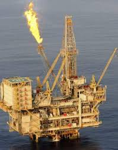
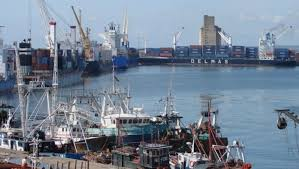
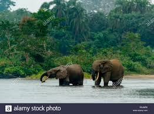
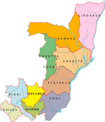
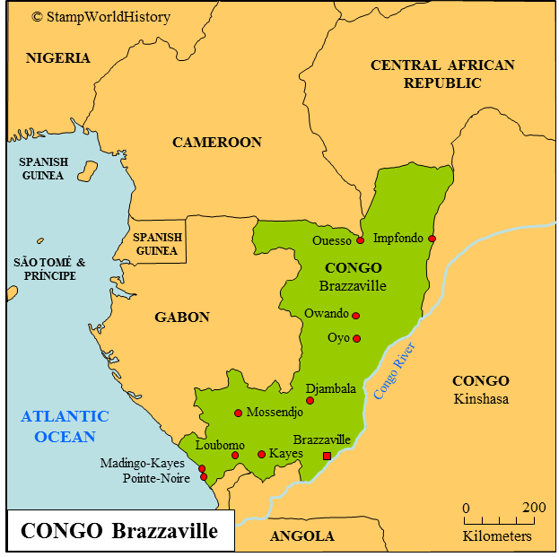
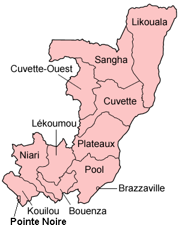
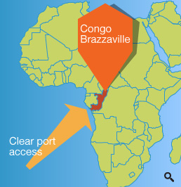

The region was dominated by Bantu-speaking tribes, who built trade links leading into theCongo River basin. Congo-Brazzaville was formerly part of the French colony of Equatorial Africa. Upon independence in 1960, the former colony of French Congo became the Republic of the Congo. The People's Republic of the Congo was a Marxist–Leninist one-party state from 1970 to 1991. Multi-party elections have been held since 1992, although a democratically elected government was ousted in the 1997 Republic of the Congo Civil Warand President Denis Sassou Nguesso, who first came to power in 1979, has ruled for 33 of the past 38 years.
The Republic of the Congo has become the fourth largest oil producer in the Gulf of Guinea, providing the country with a degree of prosperity despite instability in some areas and unequal distribution of oil revenue nationwide. Congo's economy is heavily dependent on the oil sector and economic growth has slowed considerably since the post-2015 drop in oil prices..
      
NB:
Congo may refer to either of two countries that border the Congo River in central Africa: the larger Democratic Republic of the Congo to the southeast (capital: Kinshasa), formerly known as Zaire and sometimes referred to as "Congo-Kinshasa"